BusinessOS
Das Betriebssystem für Unternehmen: eine modulare, KI-native ERP-Plattform mit einer gemeinsamen Datenbasis, Mandantentrennung und lückenlosem Audit.
Quellcode auf GitHubÜberblick
Organisationen & Rechte funktioniert
Mehrere Firmen pro Benutzer, Organisationswechsel, Rollen und Berechtigungen – serverseitig geprüft.
Beschaffung funktioniert
Anforderung, Freigabe (über 5.000 € zusätzlich Finanzen), Bestellung mit Kostenstelle, Lieferanten.
Budgets funktioniert
Budget je Kostenstelle und Jahr; gebunden wird aus den Bestellungen berechnet, Überschreitungen werden angezeigt.
Audit-Log funktioniert
Jede Änderung wird in derselben Transaktion protokolliert, auch jede KI-Aktion.
Personal funktioniert
Mitarbeiter, Beschäftigung, Urlaubskonto als Journal, Abwesenheiten mit Freigabe; sensible Daten getrennt und protokolliert.
Dienstplanung funktioniert
Schichten, Regelprüfung (Ruhezeit, Höchstarbeitszeit), unveränderliche Planversionen, Schichttausch, Kalenderexport.
Zeiterfassung funktioniert
Stempeluhr, Korrekturen nur per Gegenbuchung mit Freigabe, Monatsabschluss, Zeitkonto, Plan/Ist.
Lohn-Export funktioniert
Zeilenbasierte CSV für die Lohnverrechnung mit eigener Lohnart-Zuordnung, Nachträgen und Prüfsumme. Keine Lohnberechnung.
KI-Copilot lesend
Fragen an die eigenen Daten über berechtigungsgeprüfte Werkzeuge, mit Quellenangabe. Noch nicht gegen die Live-API geprüft.
Finanzen funktioniert
Eingangs- und Ausgangsrechnungen mit Belegupload und Vier-Augen-Freigabe; Export an die Steuerberatung als BMD- (BuErf) oder DATEV-Buchungsstapel samt Belegpaket. Kein eigenes Hauptbuch. Beide Formate sind nach den veröffentlichten Beschreibungen gebaut und noch nicht gegen echte Systeme getestet.
Lager · Projekte · CRM · Workflows geplant
Noch nicht umgesetzt und in der Anwendung klar als geplant gekennzeichnet.
Funktionen im Detail
Alle Bilder sind echte Bildschirmfotos der laufenden Anwendung mit erfundenen Demo-Daten (Firma „Muster GmbH“, fiktive Personen, UIDs und Nummern).
Anmeldung, Organisationen und Rollen funktioniert
BusinessOS ist mandantenfähig: Eine Person kann Mitglied mehrerer Organisationen (Firmen) sein und wechselt oben über die Auswahl zwischen ihnen. Jede Anfrage prüft die Mitgliedschaft neu – ein entzogenes Recht wirkt sofort.

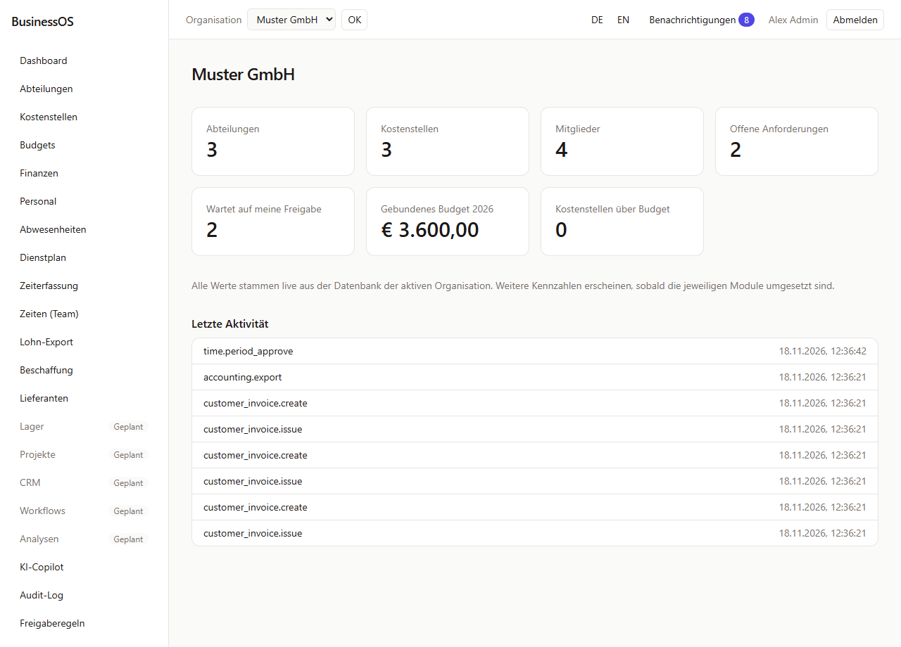
Was Sie tun können
- Mit E-Mail und Passwort anmelden; nach fünf Fehlversuchen wird das Konto 15 Minuten gesperrt (gezählt werden nur fehlgeschlagene Anmeldungen).
- Die Organisation wechseln und die Oberfläche zwischen Deutsch und Englisch umschalten (DE/EN oben rechts).
- Auf dem Dashboard sehen: Zahl der Abteilungen, Kostenstellen und Mitglieder, offene Anforderungen, Freigaben, die auf Sie warten, gebundenes Budget und Kostenstellen über Budget – dazu die letzten Aktivitäten aus dem Audit-Log. Alle Werte stammen live aus der Datenbank.
Rollen und Rechte
- Mitgliedschaften tragen eine Rolle: Inhaber (alles), Finanzen, Führungskraft, Personal, Dienstplaner und Mitarbeiter. Jede Rolle besteht aus fein abgestuften Berechtigungen (z. B. „Beschaffung freigeben“, „Zeiten korrigieren“, „Lohn-Export erzeugen“).
- Die Berechtigung wird serverseitig am Anfang jeder Funktion geprüft, nicht nur durch ausgeblendete Menüs. Eine automatische Matrix testet für jede Rolle, was erlaubt und was verboten ist.
- Die Navigation zeigt alle Module; Module, die es noch nicht gibt, stehen als „Geplant“ in der Liste.
Grenzen: Passwort-Zurücksetzen per E-Mail und Mehrfaktor-Anmeldung (MFA) gibt es noch nicht.
Abteilungen, Kostenstellen und Lieferanten funktioniert
Die Stammdaten, auf denen alle anderen Module aufbauen. Sie werden einmal gepflegt und überall verwendet.
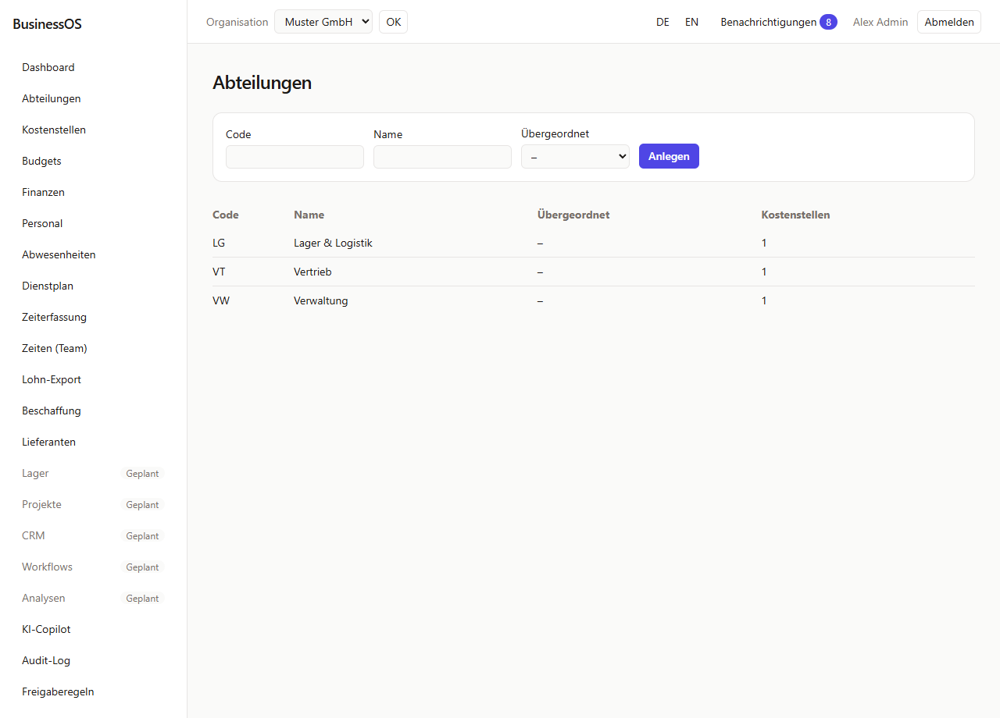
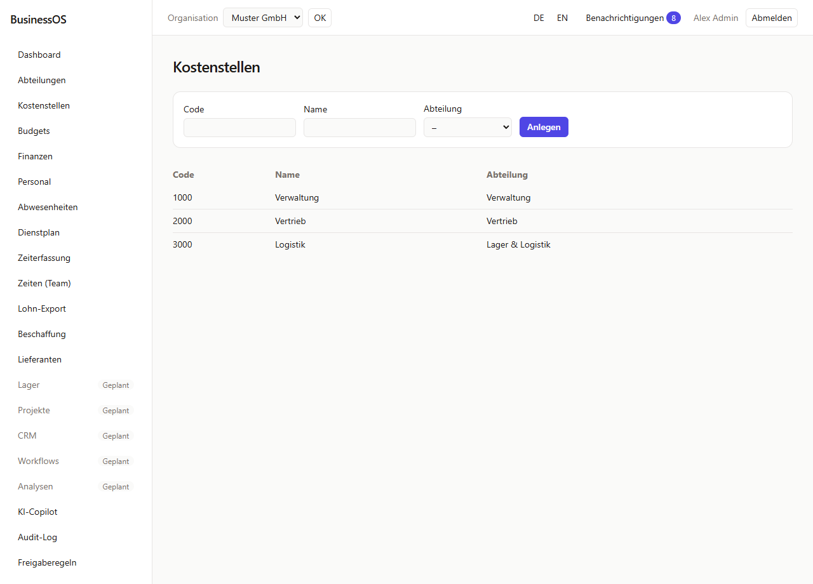

Abteilungen und Kostenstellen
- Abteilungen können verschachtelt sein (übergeordnete Abteilung). Kostenstellen gehören optional zu einer Abteilung und tragen einen kurzen Code (z. B. 2000 Vertrieb).
- Codes sind je Organisation eindeutig; ungültige Zeichen werden an der Eingabegrenze abgelehnt.
Lieferanten
- Lieferanten mit Nummer, Name und E-Mail. Sie werden in der Beschaffung (Bestellung) und im Finanzmodul (Eingangsrechnungen, Kreditorenkonto, UID) verwendet.
Budgets funktioniert
Ein Budget je Kostenstelle und Geschäftsjahr. Was gebunden ist, wird nicht von Hand gepflegt, sondern aus den Bestellungen berechnet – es kann daher nicht von der Wirklichkeit abweichen.
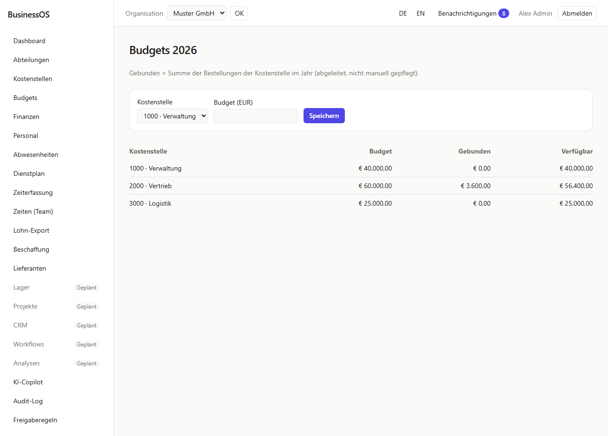
So funktioniert es
- Berechtigte (Finanzen, Inhaber) setzen den Budgetbetrag je Kostenstelle und Jahr.
- Die Tabelle zeigt Budget, Gebunden (Summe der Bestellungen der Kostenstelle im Jahr) und Verfügbar. Überschreitungen werden markiert und erscheinen als Kennzahl auf dem Dashboard.
- Geldbeträge werden überall als Dezimalzahl mit exakter Arithmetik geführt, nie als Gleitkommazahl.
Grenzen: Eine Verknüpfung von Eingangsrechnungen mit dem Budget (Ist statt nur Bestellbindung) ist noch nicht umgesetzt.
Beschaffung und Freigaberegeln funktioniert
Von der Bestellanforderung über die mehrstufige Freigabe bis zur Bestellung – mit Budgetbindung und lückenloser Nachvollziehbarkeit.
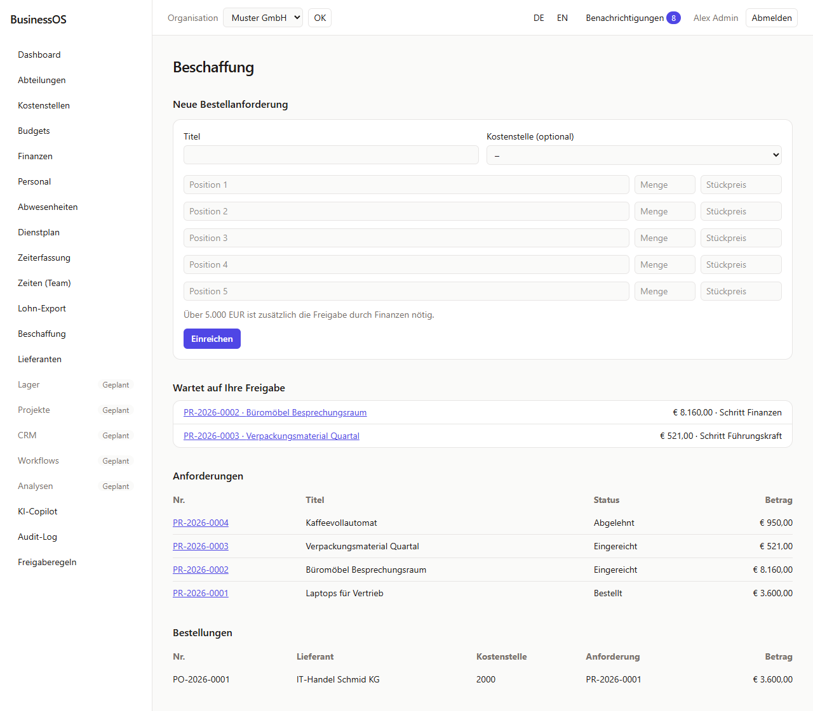
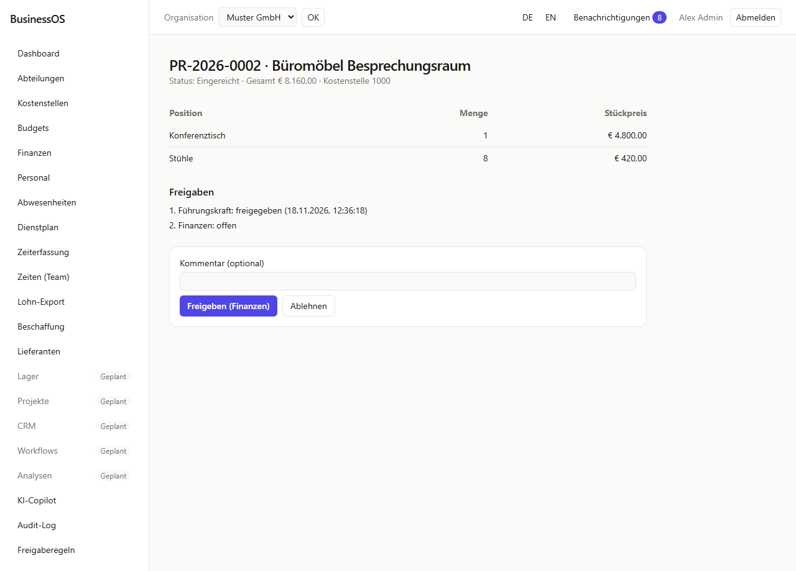

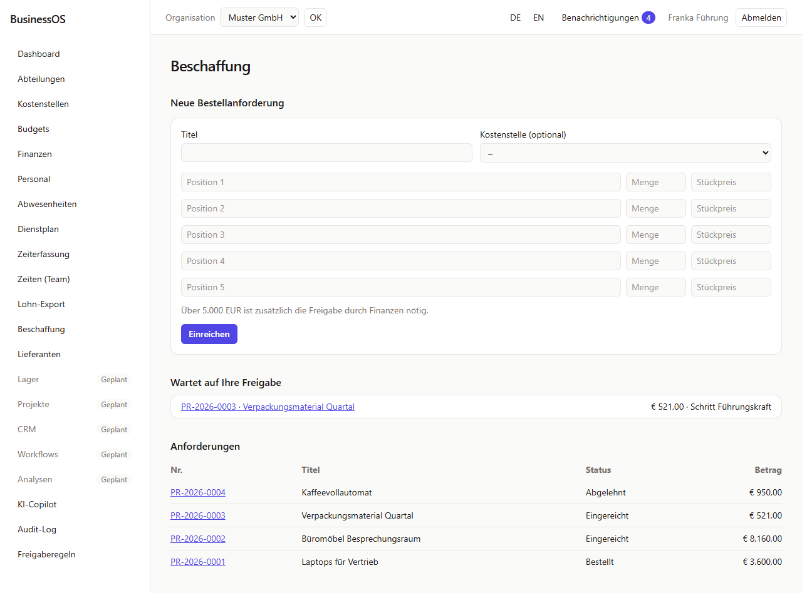
Ablauf
- Anfordern: Mitarbeiter erfassen Titel, optional eine Kostenstelle und bis zu fünf Positionen (Beschreibung, Menge, Stückpreis). Die Nummer (PR-JJJJ-NNNN) wird fortlaufend vergeben.
- Freigeben: Die Führungskraft entscheidet; ab einem Gesamtbetrag über 5.000 € ist zusätzlich die Freigabe durch Finanzen nötig. Ablehnen ist mit Kommentar möglich. Wer freigeben darf, bestimmt die Berechtigung des Schritts, nicht der Name.
- Bestellen: Freigegebene Anforderungen werden einem Lieferanten und einer Kostenstelle zugeordnet und zur Bestellung. Dabei werden in einer einzigen Transaktion Bestellung, Budgetbindung, Audit-Eintrag und Ereignis geschrieben.
Freigaberegeln
- Die Schritte (Bezeichnung, erforderliche Berechtigung, optionaler Mindestbetrag) sind als versionierte Richtlinie konfigurierbar – keine festen Schwellen im Code.
- Eine neue Version gilt nur für neu eingereichte Anforderungen; laufende Vorgänge behalten ihre Schritte und deren damals gültige Berechtigung.
- Wer eine Anforderung gestellt hat, kann sie nicht selbst freigeben.
Personal und Abwesenheiten funktioniert
Die Personalbasis: Mitarbeiterstammdaten, Beschäftigungszeiträume, Urlaubskonto und Abwesenheiten mit Freigabe. Sensible Daten sind getrennt und werden beim Lesen protokolliert.
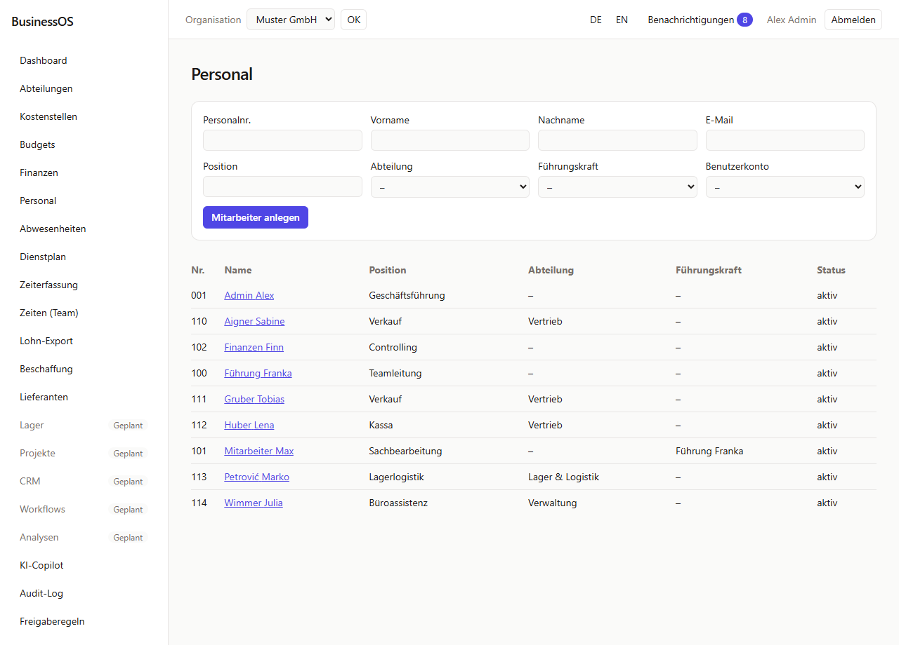


Mitarbeiter
- Stammdaten (Nummer, Name, Position, Abteilung, Führungskraft, Verknüpfung mit dem Benutzerkonto) und Beschäftigungszeiträume mit Vertragsart und Wochenstunden – ohne Überschneidungen.
- Persönliche Angaben (Geburtsdatum, Adresse, Telefon, Notfallkontakt) sind besonders geschützt: Jeder Abruf wird im Audit-Log festgehalten.
Urlaub und Abwesenheiten
- Das Urlaubskonto ist ein Journal: Anspruch, Übertrag und Korrekturbuchungen werden hinzugefügt, nie überschrieben. Angezeigt werden Anspruch, verbraucht, beantragt und verfügbar.
- Abwesenheitsarten: Urlaub, Krankenstand, Pflegefreistellung, Sonderurlaub. Gezählt werden Arbeitstage ohne Wochenenden und österreichische Feiertage. Das Hinweisfeld ist ausdrücklich ohne Diagnosen.
- Urlaub und Pflegefreistellung gehen zur Freigabe an die Führungskraft; ein Antrag, der mehr Tage braucht als verfügbar, wird abgelehnt. Entscheidungen und Stornos laufen als Ereignisse, Betroffene werden benachrichtigt.
Grenzen: Es gibt noch kein DSGVO-Löschkonzept (Anonymisierung, Aufbewahrungsfristen) – vor dem Produktivbetrieb nötig.
Dienstplanung funktioniert
Schichtpläne je Standort mit automatischer Regelprüfung, Veröffentlichung in Versionen und Schichttausch.
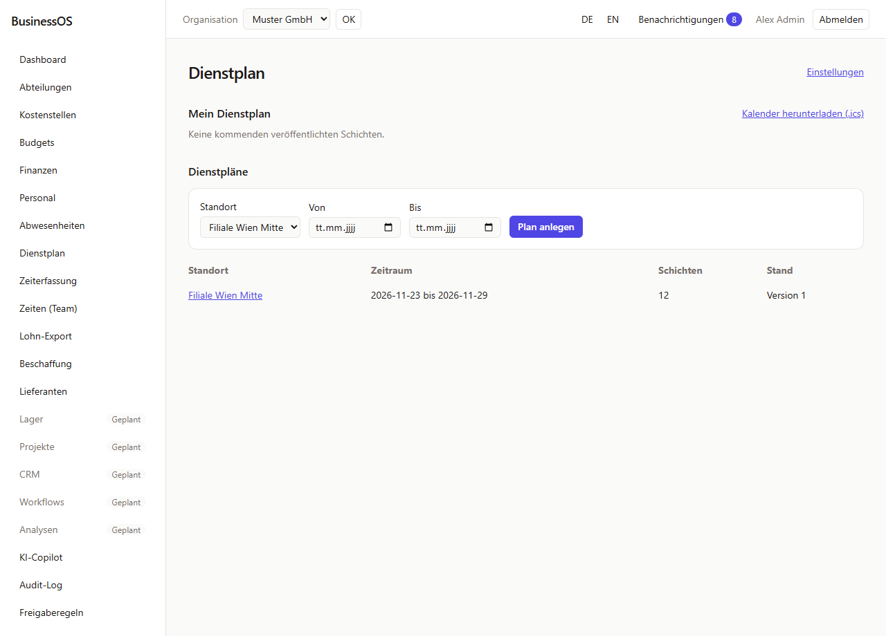
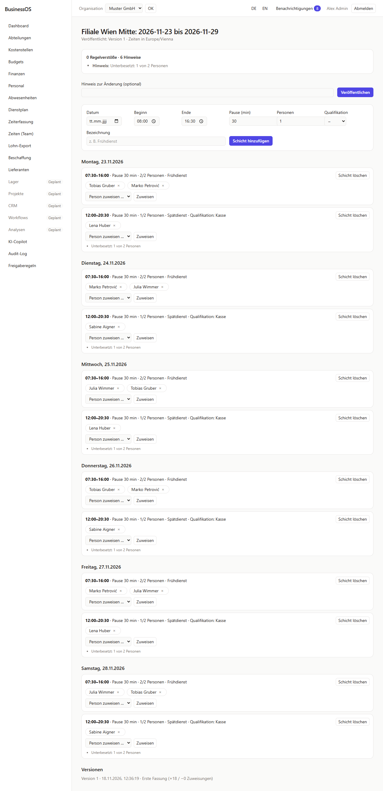
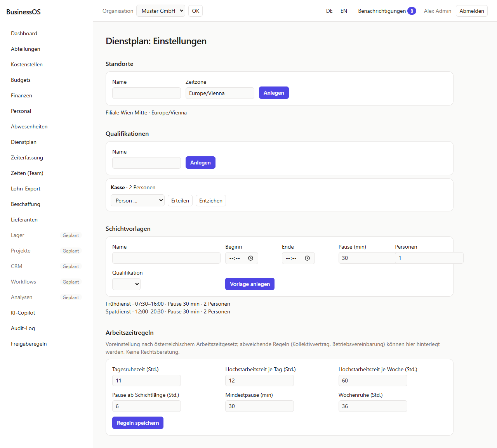

Planen
- Einrichten: Standorte mit Zeitzone, Qualifikationen (z. B. Kasse), Schichtvorlagen (Frühdienst/Spätdienst) und die Arbeitszeitregeln (Voreinstellung nach österreichischem Arbeitszeitgesetz, anpassbar für Kollektivvertrag oder Betriebsvereinbarung).
- Einen Plan für einen Zeitraum anlegen, Schichten hinzufügen (Datum, Zeiten, Pause, benötigte Personen, Qualifikation, Bezeichnung) und Personen zuweisen.
- Die Regelprüfung läuft laufend und zeigt Regelverstöße (z. B. Ruhezeit, Höchstarbeitszeit pro Tag/Woche, fehlende Pause, Überschneidungen) und Hinweise (z. B. Unterbesetzung). Abwesenheiten und fehlende Qualifikationen werden berücksichtigt.
Veröffentlichen und tauschen
- Beim Veröffentlichen entsteht eine unveränderliche Version; Änderungen erzeugen eine neue Version mit Änderungshinweis. Mitarbeiter sehen nur die veröffentlichte Fassung, nie die Arbeitskopie.
- Mitarbeiter können einen Schichttausch mit einer Kollegin oder einem Kollegen anfragen; nach deren Zustimmung entscheidet die Führungskraft. Die Regeln werden auch beim Tausch geprüft.
- Der persönliche Plan lässt sich als Kalenderdatei (.ics) herunterladen. Zeiten werden als UTC gespeichert und je Standort in der lokalen Zeit angezeigt – auch über Sommerzeitwechsel.
Grenzen: Die Regeln sind Konfiguration, keine Rechtsberatung: Ob Ihr Kollektivvertrag abweicht, müssen Sie selbst festlegen.
Zeiterfassung funktioniert
Stempeluhr, Korrekturen mit Freigabe, Monatsabschluss und Zeitkonto – mit unveränderlichen Buchungen.

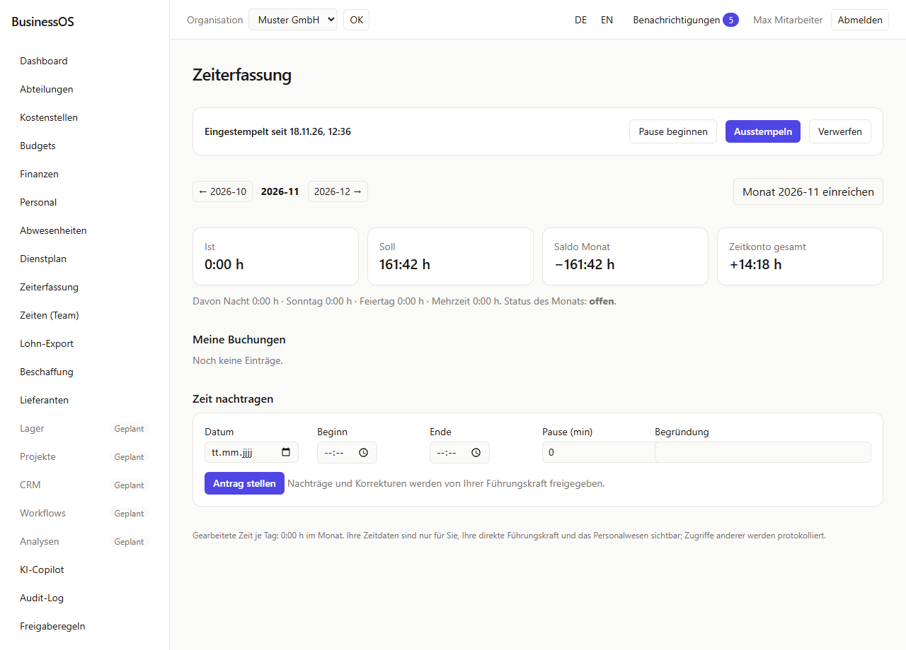
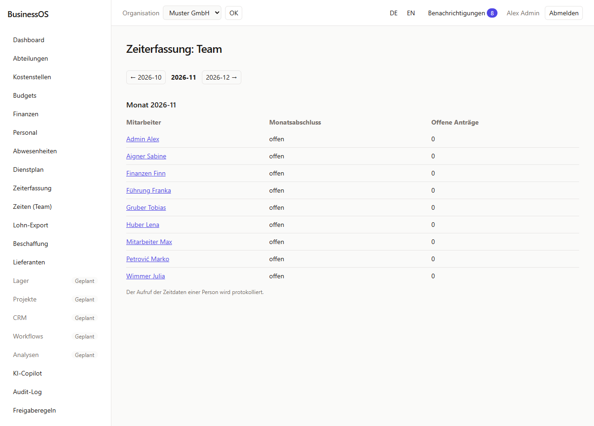
Erfassen
- Ein- und Ausstempeln (optional mit Kostenstelle), Pausen starten und beenden. Buchungen in der Zukunft sind nicht möglich.
- Nachtragen und Korrigieren geschieht per Antrag mit Begründung; die Führungskraft gibt frei. Bestehende Buchungen werden nie verändert – eine Korrektur ist eine Gegenbuchung plus neue Buchung.
Monat und Konto
- Die Monatsübersicht zeigt Ist, Soll (aus Beschäftigung, Feiertagen und Abwesenheiten berechnet), Monatssaldo und Zeitkonto sowie die Anteile Nacht, Sonntag, Feiertag und Mehrzeit; die Prozentsätze sind konfigurierbar.
- Zum Monatsende reicht der Mitarbeiter den Monat ein; die Führungskraft gibt ihn frei oder gibt ihn mit Begründung zurück. Freigegebene Monate sind gesperrt; Personal kann sie mit Begründung wieder öffnen. Eigene Zeiten kann niemand selbst freigeben.
- Das Zeitkonto ist ein Journal; Anpassungen sind Buchungen mit Begründung.
- Zeitdaten sind nur für die Person selbst, die direkte Führungskraft und das Personalwesen sichtbar; jeder Zugriff anderer wird protokolliert.
Grenzen: Auszahlungen von Zeitguthaben (Überstunden auszahlen) sind noch nicht abgebildet.
Lohn-Export funktioniert
Übergibt erfasste Mengen freigegebener Monate an die Lohnverrechnung. Es werden keine Löhne, Steuern oder Abgaben berechnet.
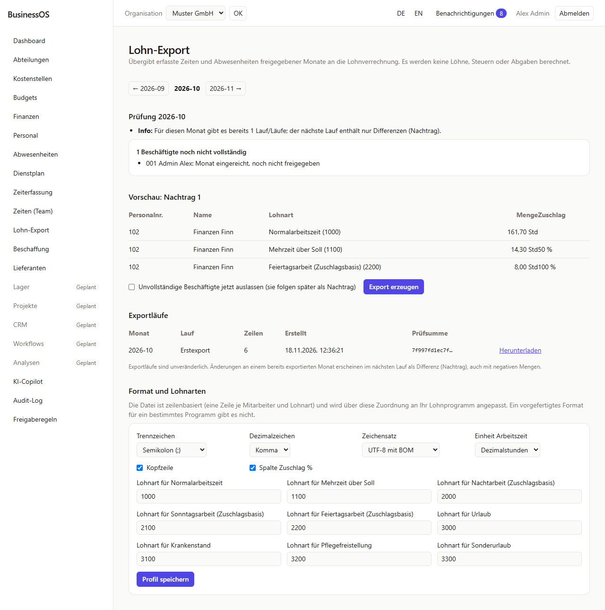
Ablauf
- Im Profil legen Sie fest, wie die Datei aussieht: Trennzeichen, Dezimalzeichen, Zeichensatz, Stunden oder Minuten, Kopfzeile – und die Lohnart-Zuordnung (z. B. Normalarbeitszeit → 1000). Ohne Zuordnung wird nichts exportiert.
- Die Prüfung zeigt vor dem Export, was fehlt: nicht freigegebene Monate, fehlende Lohnarten, Beschäftigte ohne Zeit und ohne Abwesenheit, Plan/Ist-Lücken. Unvollständiges wird nur nach ausdrücklicher Bestätigung exportiert.
- Der Lauf erzeugt zeilenbasierte CSV je Person und Lohnart (Menge und Zuschlagsprozent). Läufe sind unveränderlich und tragen eine Prüfsumme (SHA-256), die beim Download geprüft wird.
- Ändert sich etwas nach dem Export, enthält der nächste Lauf einen Nachtrag mit den Differenzen (auch negativ). Im Screenshot sieht man einen solchen Nachtrag, weil ein Monat erst nach dem ersten Lauf freigegeben wurde.
Grenzen: Kein vorgefertigtes Format für BMD, RZL oder DATEV Lohn: Die Datei muss im Importassistenten der Lohnverrechnung zugeordnet werden. Keine direkte Schnittstelle, nur Download als Datei.
Finanzen: Belege und Export an die Steuerberatung funktioniert
BusinessOS führt kein Hauptbuch. Die Steuerberatung bucht; BusinessOS erfasst Belege sauber, prüft sie und liefert den Buchungsstapel samt Belegen im Format BMD (BuErf variabel) oder DATEV (Buchungsstapel).
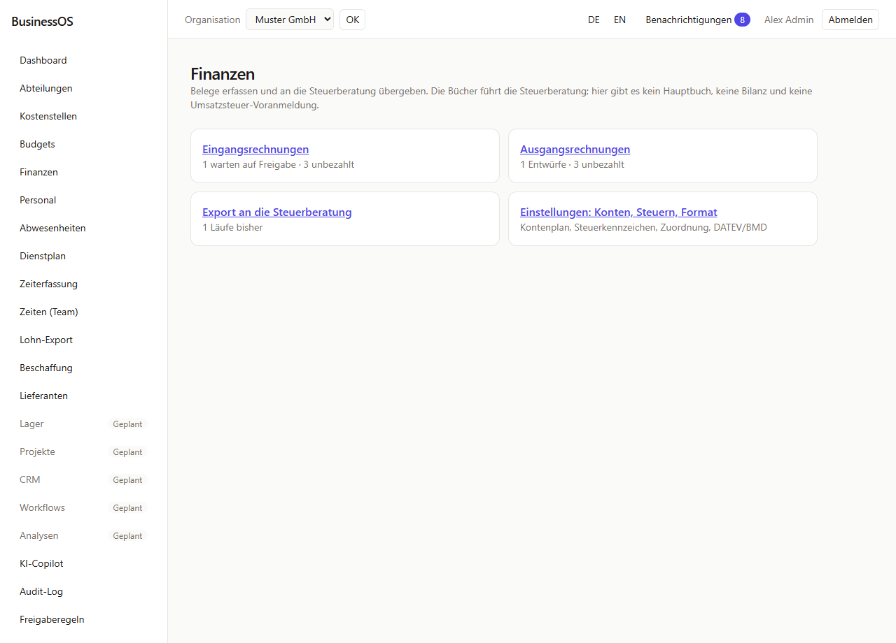


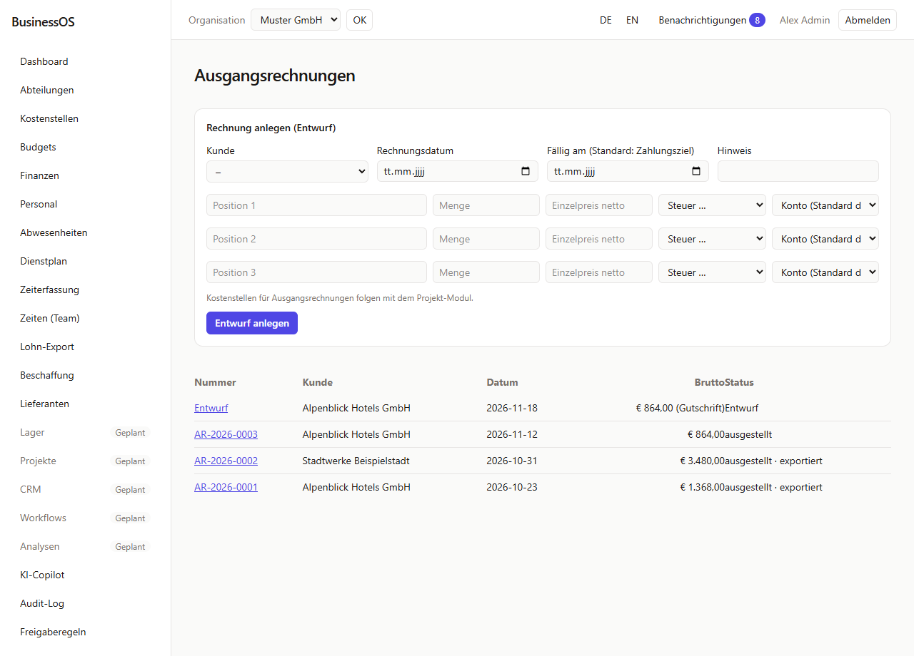
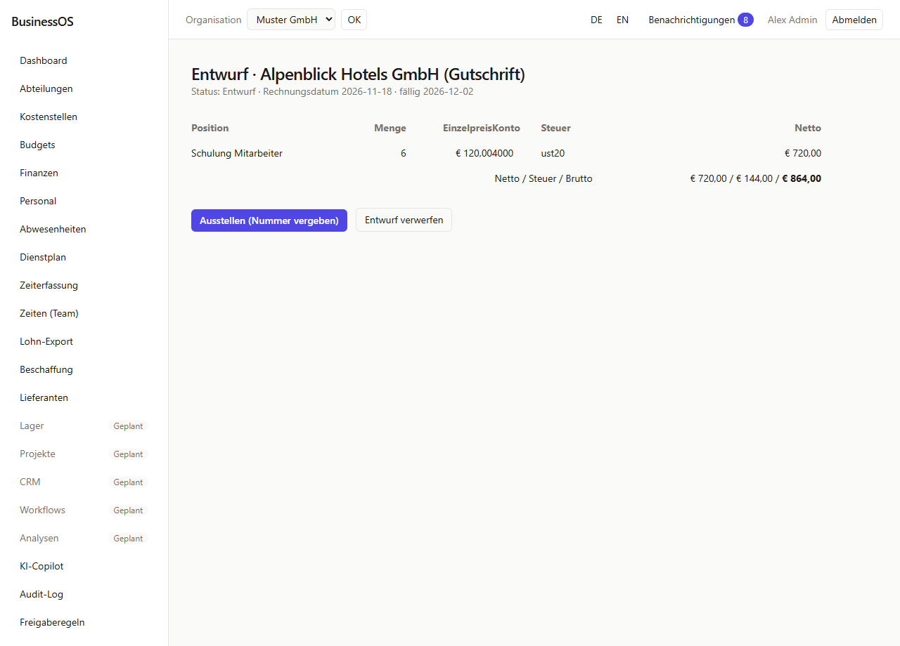

Einrichten
- Kontenplan importieren oder anlegen (Sachkonten, Kreditoren, Debitoren), Steuerkennzeichen mit Satz und Zuordnung auf BMD-Steuercode bzw. DATEV-BU-Schlüssel, Konten und UID je Lieferant und Kunde.
- Im Buchhaltungsprofil: Format, Berater- und Mandantennummer (DATEV), Kontenlänge, Beginn des Wirtschaftsjahres, Buchungssymbole, Belegpaket ja/nein. Die Vorgaben dafür macht die Steuerberatung.
Eingangsrechnungen
- Rechnung mit Positionen (Netto, Steuerkennzeichen, Konto, Kostenstelle) und Belegdatei erfassen. Uploads (PDF, PNG, JPEG, höchstens 8 MB) werden am Inhalt geprüft, nicht an der Endung, und mit Prüfsumme gespeichert.
- Dublettenprüfung je Lieferant und Rechnungsnummer. Die Steuer wird je Steuersatz auf die Summe gerechnet und die Rundungsdifferenz fair auf die Positionen verteilt.
- Vier-Augen-Freigabe: Wer erfasst, gibt nicht frei. Mit der Freigabe entsteht die fortlaufende Belegnummer ER-JJJJ-NNNN. Danach: als bezahlt markieren, vor dem Export stornieren, Gutschriften erfassen.
Ausgangsrechnungen
- Entwurf mit Positionen, dann Ausstellen: Die Nummer (AR-JJJJ-NNNN) wird lückenlos vergeben, ausgestellte Rechnungen sind unveränderlich. Korrekturen laufen als Gutschrift (Entwurf aus der Rechnung); Zahlungseingänge werden vermerkt.
Export
- Die Vorschau listet alle Belege des nächsten Laufs und prüft vorab: fehlende Konten, fehlender BMD-Code oder DATEV-Schlüssel, Kontenlängen, mehrere Wirtschaftsjahre u. a. Fehler blockieren den Lauf, Hinweise müssen bestätigt werden.
- Der Lauf erzeugt die Buchungsdatei (DATEV: EXTF-Kopfzeile und 125 Spalten, Windows-1252; BMD: Semikolon-CSV) und optional ein Belegpaket als ZIP. Jeder Beleg wird genau einmal exportiert; Läufe sind unveränderlich, mit Prüfsumme, und jeder Download steht im Audit-Log.
Grenzen: Beide Formate sind nach den veröffentlichten Beschreibungen gebaut, aber nicht gegen ein echtes BMD- oder DATEV-System getestet. Vor dem Einsatz bitte mit der Steuerberatung einen Testimport machen. Noch nicht vorhanden: PDF der ausgestellten Rechnung, Fremdwährung, Bankanbindung, Umsatzsteuer-Voranmeldung.
Benachrichtigungen, Audit-Log und KI-Copilot funktioniert
Die Querschnittsfunktionen, die alle Module verbinden.

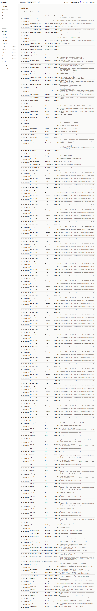


Benachrichtigungen
- Freigaben, Entscheidungen, Monatsabschlüsse und Planänderungen erzeugen Benachrichtigungen. Sie entstehen über einen Transaktions-Outbox: Ereignis und Änderung werden gemeinsam gespeichert und danach zuverlässig, idempotent und mit Wiederholung abgearbeitet (auch über einen eigenen Worker-Prozess).
Audit-Log
- Jede schreibende Operation protokolliert Wer, Wann, Was und Details in derselben Transaktion. Die Liste ist nur lesbar. Auch Lesezugriffe auf sensible Daten, Downloads und jede KI-Aktion stehen dort.
KI-Copilot
- Beantwortet Fragen zu den Daten der aktiven Organisation – nur lesend und nur mit den Berechtigungen der fragenden Person, über feste Werkzeuge (kein freies SQL). Jede Frage und jeder Datenzugriff wird protokolliert.
- Der Copilot benötigt einen
ANTHROPIC_API_KEYauf dem Server; ohne Schlüssel zeigt die Seite den Hinweis wie im Screenshot. Er kennt derzeit Beschaffung, Budgets, Lieferanten, Kostenstellen und Abteilungen.
Geplante Module
- Lager, Projekte, CRM, Workflows und Analysen sind in der Navigation sichtbar, aber klar als geplant gekennzeichnet; sie täuschen keine Funktion vor.
Grenzen: Der Copilot wurde nur mit einem Testanbieter geprüft, nicht gegen die Live-API.
Rollenansichten funktioniert
Dieselbe Anwendung verhält sich je nach Rolle unterschiedlich – Dashboard und erlaubte Aktionen richten sich nach den Berechtigungen.
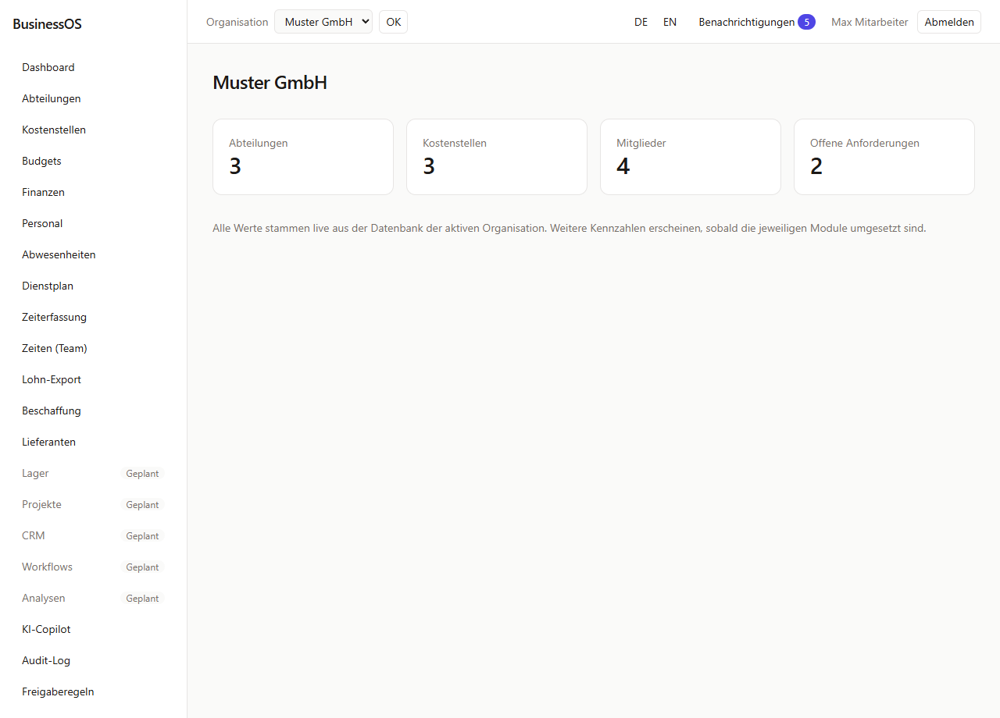

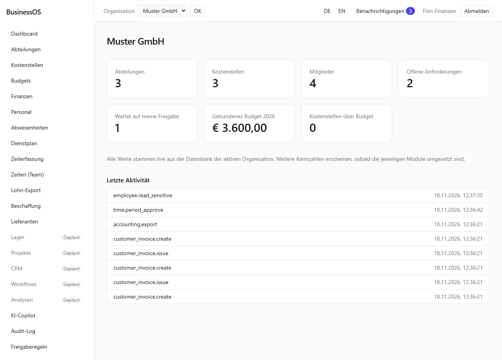
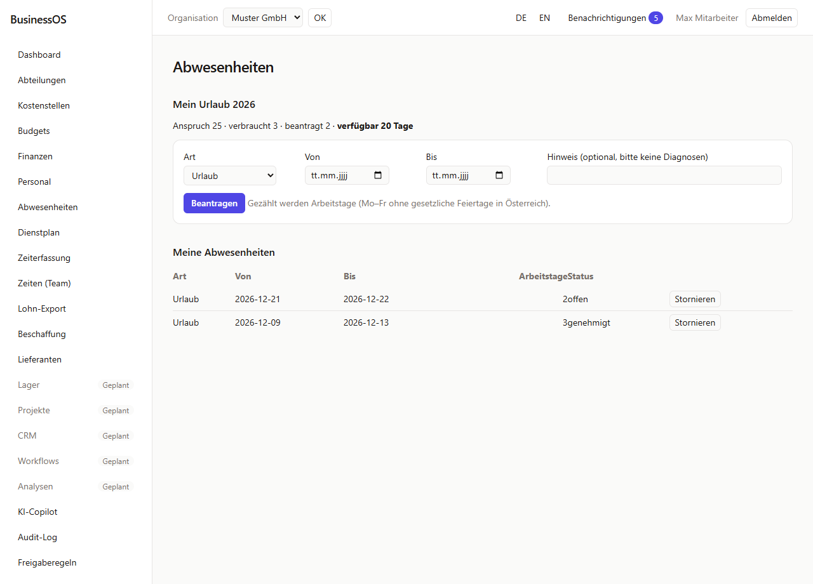
Beispiele
- Mitarbeiter stempeln, beantragen Urlaub und Beschaffung, sehen ihren Plan und ihre Zeiten – und nichts von anderen.
- Führungskräfte entscheiden über Anträge ihres Teams (Urlaub, Zeiten, Beschaffung, Tausch) und sehen deren Monatsabschlüsse.
- Finanzen pflegen Budgets und Finanzdaten, geben Eingangsrechnungen frei und erzeugen Exporte.
Qualität
Rund 350 Unit- und Integrationstests gegen PostgreSQL, 45 Browser-Tests über mehrere Rollen, Mandantentrennung, Autorisierungsmatrix, Finanz- und Zeitkonsistenz sowie eine automatische Barrierefreiheitsprüfung (WCAG A/AA) laufen in der CI. Nicht abgedeckt: manuelle Barrierefreiheits-, Last- und Penetrationstests.
Prinzipien
Eine Quelle der Wahrheit · Strikte Mandantentrennung · Jede Änderung im Audit-Log · KI ist Schnittstelle, nicht Ersatz für Geschäftslogik · Deutsch und Englisch.